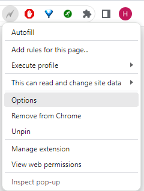
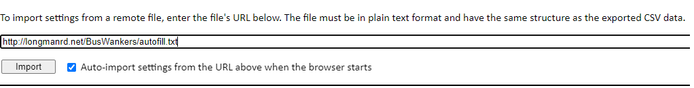

This is the 2024 Glastonbury Bus Wankers Autofill File
Use this file to populate your Autofill Options

In AutoFill Options you will see a band of tabs across the top. You should be on the Import/Export tab to start.
EITHER (Recommended): Copy and Paste the link to the AutoFill Text File ( http://longmanrd.net/BusWankers/autofill.txt ) into the lower frame and click 'Import'

If you do this ahead of time and select 'Auto-import settings from the URL above when the browser starts'
you should be good to go next time you open your browser
OR : Click the link below to download the raw file, copy the contents into the top big frame, then click 'Import':